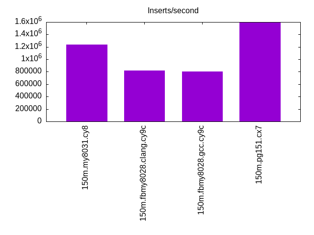
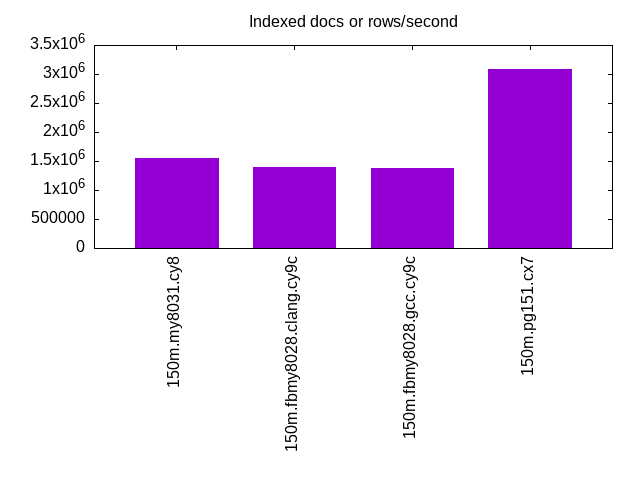
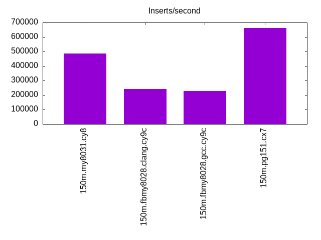
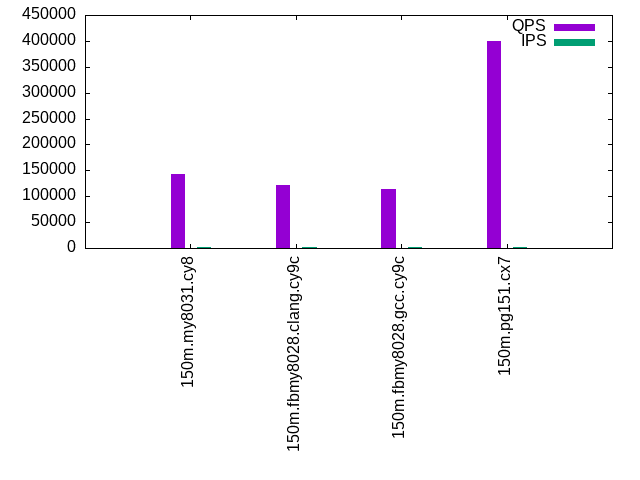
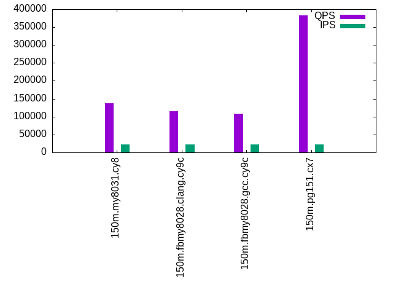

This is a report for the insert benchmark with 150M docs and 22 client(s). It is generated by scripts (bash, awk, sed) and Tufte might not be impressed. An overview of the insert benchmark is here and a short update is here. Below, by DBMS, I mean DBMS+version.config. An example is my8020.c10b40 where my means MySQL, 8020 is version 8.0.20 and c10b40 is the name for the configuration file.
The test server is an c7g.16xl with 64 cores, 128G RAM and io2 storage (5T, 100K IOPs). The benchmark was run with 22 clients and there was 1 or 2 connections per client (1 for queries, 1 for inserts). The benchmark loads 150M rows without secondary indexes, creates secondary indexes, loads another 50M rows then does 3 read+write tests for one hour each that do queries as fast as possible with 100, 500 and then 1000 writes/second/client concurrent with the queries. The database is cached by the storage engine and the only IO is for writes. Clients and the DBMS share one server. The per-database configs are in the per-database subdirectories here.
The tested DBMS are:
The numbers are inserts/s for l.i0 and l.i1, indexed docs (or rows) /s for l.x and queries/s for q*.2. The values are the average rate over the entire test for inserts (IPS) and queries (QPS). The range of values for IPS and QPS is split into 3 parts: bottom 25%, middle 50%, top 25%. Values in the bottom 25% have a red background, values in the top 25% have a green background and values in the middle have no color. A gray background is used for values that can be ignored because the DBMS did not sustain the target insert rate. Red backgrounds are not used when the minimum value is within 80% of the max value.
| dbms | l.i0 | l.x | l.i1 | q100.1 | q500.1 | q1000.1 |
|---|---|---|---|---|---|---|
| 150m.my8031.cy8 | 1233619 | 1543494 | 485452 | 143181 | 141291 | 137408 |
| 150m.fbmy8028.clang.cy9c | 819200 | 1399435 | 241607 | 122453 | 119638 | 115103 |
| 150m.fbmy8028.gcc.cy9c | 806597 | 1381021 | 225986 | 113961 | 112014 | 107790 |
| 150m.pg151.cx7 | 1588752 | 3086988 | 663656 | 400317 | 386464 | 382136 |
This lists the average rate of inserts/s for the tests that do inserts concurrent with queries. For such tests the query rate is listed in the table above. The read+write tests are setup so that the insert rate should match the target rate every second. Cells that are not at least 95% of the target have a red background to indicate a failure to satisfy the target.
| dbms | q100.1 | q500.1 | q1000.1 |
|---|---|---|---|
| my8031.cy8 | 2185 | 10924 | 21848 |
| fbmy8028.clang.cy9c | 2185 | 10924 | 21854 |
| fbmy8028.gcc.cy9c | 2185 | 10924 | 21848 |
| pg151.cx7 | 2185 | 10924 | 21854 |
| target | 2200 | 11000 | 22000 |
l.i0: load without secondary indexes. Graphs for performance per 1-second interval are here.
Average throughput:
Insert response time histogram: each cell has the percentage of responses that take <= the time in the header and max is the max response time in seconds. For the max column values in the top 25% of the range have a red background and in the bottom 25% of the range have a green background. The red background is not used when the min value is within 80% of the max value.
| dbms | 256us | 1ms | 4ms | 16ms | 64ms | 256ms | 1s | 4s | 16s | gt | max |
|---|---|---|---|---|---|---|---|---|---|---|---|
| my8031.cy8 | 15.465 | 84.300 | 0.161 | 0.021 | 0.054 | 0.143 | |||||
| fbmy8028.clang.cy9c | 6.105 | 93.726 | 0.098 | 0.070 | 0.001 | 0.070 | |||||
| fbmy8028.gcc.cy9c | 5.063 | 94.771 | 0.095 | 0.068 | 0.002 | 0.073 | |||||
| pg151.cx7 | 99.766 | 0.231 | 0.003 | 0.006 |
Performance metrics for the DBMS listed above. Some are normalized by throughput, others are not. Legend for results is here.
ips qps rps rmbps wps wmbps rpq rkbpq wpi wkbpi csps cpups cspq cpupq dbgb1 dbgb2 rss maxop p50 p99 tag 1233619 0 0 0.0 1843.7 316.6 0.000 0.000 0.001 0.263 209592 31.9 0.170 17 7.0 135.6 14.6 0.143 89303 17681 150m.my8031.cy8 819200 0 0 0.0 1277.8 290.7 0.000 0.000 0.002 0.363 242858 32.0 0.296 25 6.2 6.7 1.8 0.070 50546 14984 150m.fbmy8028.clang.cy9c 806597 0 0 0.0 1247.4 285.0 0.000 0.000 0.002 0.362 213442 31.8 0.265 25 4.0 4.5 1.8 0.073 45351 34863 150m.fbmy8028.gcc.cy9c 1588752 0 0 0.0 2915.3 680.7 0.000 0.000 0.002 0.439 198608 31.3 0.125 13 10.0 27.1 9.8 0.006 140450 14984 150m.pg151.cx7
l.x: create secondary indexes.
Average throughput:
Performance metrics for the DBMS listed above. Some are normalized by throughput, others are not. Legend for results is here.
ips qps rps rmbps wps wmbps rpq rkbpq wpi wkbpi csps cpups cspq cpupq dbgb1 dbgb2 rss maxop p50 p99 tag 1543494 0 8857 569.2 30425.4 1454.0 0.006 0.378 0.020 0.965 151184 22.8 0.098 9 15.6 144.1 18.1 0.002 NA NA 150m.my8031.cy8 1399435 0 4 0.2 1168.4 264.4 0.000 0.000 0.001 0.193 9297 26.2 0.007 12 7.2 7.8 11.2 0.002 NA NA 150m.fbmy8028.clang.cy9c 1381021 0 4 0.2 1155.0 260.5 0.000 0.000 0.001 0.193 9066 26.1 0.007 12 7.3 7.8 10.7 0.008 NA NA 150m.fbmy8028.gcc.cy9c 3086988 0 0 0.0 3257.7 789.7 0.000 0.000 0.001 0.262 51015 14.1 0.017 3 19.3 44.8 0.0 0.023 NA NA 150m.pg151.cx7
l.i1: continue load after secondary indexes created. Graphs for performance per 1-second interval are here.
Average throughput:
Insert response time histogram: each cell has the percentage of responses that take <= the time in the header and max is the max response time in seconds. For the max column values in the top 25% of the range have a red background and in the bottom 25% of the range have a green background. The red background is not used when the min value is within 80% of the max value.
| dbms | 256us | 1ms | 4ms | 16ms | 64ms | 256ms | 1s | 4s | 16s | gt | max |
|---|---|---|---|---|---|---|---|---|---|---|---|
| my8031.cy8 | 99.299 | 0.349 | 0.205 | 0.147 | 0.217 | ||||||
| fbmy8028.clang.cy9c | 0.667 | 40.489 | 58.765 | 0.077 | 0.003 | 0.087 | |||||
| fbmy8028.gcc.cy9c | 0.481 | 32.434 | 67.043 | 0.038 | 0.004 | 0.083 | |||||
| pg151.cx7 | 7.629 | 92.357 | 0.013 | 0.012 |
Performance metrics for the DBMS listed above. Some are normalized by throughput, others are not. Legend for results is here.
ips qps rps rmbps wps wmbps rpq rkbpq wpi wkbpi csps cpups cspq cpupq dbgb1 dbgb2 rss maxop p50 p99 tag 485452 0 4540 70.9 3423.1 389.4 0.009 0.150 0.007 0.821 188999 30.3 0.389 40 27.7 156.3 32.8 0.217 30318 350 150m.my8031.cy8 241607 0 147 18.2 1312.5 305.3 0.001 0.077 0.005 1.294 108278 18.4 0.448 49 14.6 15.8 12.9 0.087 11288 7692 150m.fbmy8028.clang.cy9c 225986 0 138 17.0 1307.3 303.7 0.001 0.077 0.006 1.376 101564 18.7 0.449 53 13.0 14.2 12.5 0.083 10639 9290 150m.fbmy8028.gcc.cy9c 663656 0 0 0.0 3306.0 776.0 0.000 0.000 0.005 1.197 226966 31.1 0.342 30 33.6 82.3 15.7 0.012 40257 17731 150m.pg151.cx7
q100.1: range queries with 100 insert/s per client. Graphs for performance per 1-second interval are here.
Average throughput:
Query response time histogram: each cell has the percentage of responses that take <= the time in the header and max is the max response time in seconds. For max values in the top 25% of the range have a red background and in the bottom 25% of the range have a green background. The red background is not used when the min value is within 80% of the max value.
| dbms | 256us | 1ms | 4ms | 16ms | 64ms | 256ms | 1s | 4s | 16s | gt | max |
|---|---|---|---|---|---|---|---|---|---|---|---|
| my8031.cy8 | 99.996 | 0.003 | nonzero | nonzero | 0.004 | ||||||
| fbmy8028.clang.cy9c | 99.972 | 0.028 | nonzero | nonzero | nonzero | 0.023 | |||||
| fbmy8028.gcc.cy9c | 99.979 | 0.021 | nonzero | nonzero | nonzero | 0.037 | |||||
| pg151.cx7 | 99.999 | 0.001 | nonzero | nonzero | 0.011 |
Insert response time histogram: each cell has the percentage of responses that take <= the time in the header and max is the max response time in seconds. For max values in the top 25% of the range have a red background and in the bottom 25% of the range have a green background. The red background is not used when the min value is within 80% of the max value.
| dbms | 256us | 1ms | 4ms | 16ms | 64ms | 256ms | 1s | 4s | 16s | gt | max |
|---|---|---|---|---|---|---|---|---|---|---|---|
| my8031.cy8 | 99.911 | 0.089 | 0.010 | ||||||||
| fbmy8028.clang.cy9c | 6.157 | 92.571 | 1.271 | 0.011 | |||||||
| fbmy8028.gcc.cy9c | 0.996 | 96.747 | 2.256 | 0.010 | |||||||
| pg151.cx7 | 97.017 | 2.748 | 0.235 | 0.024 |
Performance metrics for the DBMS listed above. Some are normalized by throughput, others are not. Legend for results is here.
ips qps rps rmbps wps wmbps rpq rkbpq wpi wkbpi csps cpups cspq cpupq dbgb1 dbgb2 rss maxop p50 p99 tag 2185 143181 0 0.0 401.5 11.7 0.000 0.000 0.184 5.488 549556 34.3 3.838 153 28.2 156.8 33.3 0.004 6569 6137 150m.my8031.cy8 2185 122453 0 0.0 31.5 6.7 0.000 0.000 0.014 3.160 470024 34.8 3.838 182 11.6 11.8 33.5 0.023 5674 5099 150m.fbmy8028.clang.cy9c 2185 113961 0 0.0 30.4 6.5 0.000 0.000 0.014 3.047 437631 34.9 3.840 196 11.6 11.8 32.9 0.037 5210 4747 150m.fbmy8028.gcc.cy9c 2185 400317 0 0.0 1875.1 61.0 0.000 0.000 0.858 28.567 1529656 33.9 3.821 54 34.3 79.9 0.0 0.011 18956 18317 150m.pg151.cx7
q500.1: range queries with 500 insert/s per client. Graphs for performance per 1-second interval are here.
Average throughput:
Query response time histogram: each cell has the percentage of responses that take <= the time in the header and max is the max response time in seconds. For max values in the top 25% of the range have a red background and in the bottom 25% of the range have a green background. The red background is not used when the min value is within 80% of the max value.
| dbms | 256us | 1ms | 4ms | 16ms | 64ms | 256ms | 1s | 4s | 16s | gt | max |
|---|---|---|---|---|---|---|---|---|---|---|---|
| my8031.cy8 | 99.936 | 0.060 | 0.004 | nonzero | 0.011 | ||||||
| fbmy8028.clang.cy9c | 99.897 | 0.102 | 0.001 | nonzero | nonzero | 0.035 | |||||
| fbmy8028.gcc.cy9c | 99.798 | 0.200 | 0.002 | nonzero | nonzero | 0.036 | |||||
| pg151.cx7 | 99.993 | 0.006 | 0.001 | nonzero | 0.012 |
Insert response time histogram: each cell has the percentage of responses that take <= the time in the header and max is the max response time in seconds. For max values in the top 25% of the range have a red background and in the bottom 25% of the range have a green background. The red background is not used when the min value is within 80% of the max value.
| dbms | 256us | 1ms | 4ms | 16ms | 64ms | 256ms | 1s | 4s | 16s | gt | max |
|---|---|---|---|---|---|---|---|---|---|---|---|
| my8031.cy8 | 99.587 | 0.413 | nonzero | 0.018 | |||||||
| fbmy8028.clang.cy9c | 0.237 | 48.947 | 50.807 | 0.009 | 0.023 | ||||||
| fbmy8028.gcc.cy9c | 0.063 | 30.690 | 69.239 | 0.008 | 0.023 | ||||||
| pg151.cx7 | 0.002 | 75.856 | 23.208 | 0.934 | 0.035 |
Performance metrics for the DBMS listed above. Some are normalized by throughput, others are not. Legend for results is here.
ips qps rps rmbps wps wmbps rpq rkbpq wpi wkbpi csps cpups cspq cpupq dbgb1 dbgb2 rss maxop p50 p99 tag 10924 141291 0 0.0 412.4 17.7 0.000 0.000 0.038 1.663 545272 35.3 3.859 160 37.4 166.0 41.7 0.011 6413 5994 150m.my8031.cy8 10924 119638 0 0.0 95.4 22.3 0.000 0.000 0.009 2.094 464348 35.6 3.881 190 14.4 15.7 80.1 0.035 5546 5051 150m.fbmy8028.clang.cy9c 10924 112014 0 0.0 95.8 22.4 0.000 0.000 0.009 2.104 435045 35.6 3.884 203 14.4 15.7 79.6 0.036 5036 4620 150m.fbmy8028.gcc.cy9c 10924 386464 0 0.0 1534.3 109.5 0.000 0.000 0.140 10.264 1481998 34.3 3.835 57 39.4 75.1 0.0 0.012 18173 17293 150m.pg151.cx7
q1000.1: range queries with 1000 insert/s per client. Graphs for performance per 1-second interval are here.
Average throughput:
Query response time histogram: each cell has the percentage of responses that take <= the time in the header and max is the max response time in seconds. For max values in the top 25% of the range have a red background and in the bottom 25% of the range have a green background. The red background is not used when the min value is within 80% of the max value.
| dbms | 256us | 1ms | 4ms | 16ms | 64ms | 256ms | 1s | 4s | 16s | gt | max |
|---|---|---|---|---|---|---|---|---|---|---|---|
| my8031.cy8 | 99.900 | 0.095 | 0.005 | nonzero | 0.013 | ||||||
| fbmy8028.clang.cy9c | 99.619 | 0.378 | 0.003 | nonzero | nonzero | 0.040 | |||||
| fbmy8028.gcc.cy9c | 99.291 | 0.706 | 0.004 | nonzero | nonzero | 0.037 | |||||
| pg151.cx7 | 99.984 | 0.014 | 0.002 | 0.001 | 0.016 |
Insert response time histogram: each cell has the percentage of responses that take <= the time in the header and max is the max response time in seconds. For max values in the top 25% of the range have a red background and in the bottom 25% of the range have a green background. The red background is not used when the min value is within 80% of the max value.
| dbms | 256us | 1ms | 4ms | 16ms | 64ms | 256ms | 1s | 4s | 16s | gt | max |
|---|---|---|---|---|---|---|---|---|---|---|---|
| my8031.cy8 | 99.632 | 0.357 | 0.011 | 0.025 | |||||||
| fbmy8028.clang.cy9c | 0.189 | 31.427 | 68.349 | 0.034 | 0.031 | ||||||
| fbmy8028.gcc.cy9c | 0.048 | 23.934 | 75.983 | 0.036 | 0.031 | ||||||
| pg151.cx7 | 0.002 | 82.044 | 16.985 | 0.969 | 0.036 |
Performance metrics for the DBMS listed above. Some are normalized by throughput, others are not. Legend for results is here.
ips qps rps rmbps wps wmbps rpq rkbpq wpi wkbpi csps cpups cspq cpupq dbgb1 dbgb2 rss maxop p50 p99 tag 21848 137408 0 0.0 1044.5 40.9 0.000 0.000 0.048 1.918 536678 35.6 3.906 166 53.5 182.1 56.3 0.013 6313 5962 150m.my8031.cy8 21854 115103 0 0.0 198.5 46.5 0.000 0.000 0.009 2.177 453651 36.7 3.941 204 20.2 21.6 94.5 0.040 5308 4876 150m.fbmy8028.clang.cy9c 21848 107790 0 0.0 200.1 46.8 0.000 0.000 0.009 2.192 425326 36.7 3.946 218 19.9 21.4 94.0 0.037 4907 4491 150m.fbmy8028.gcc.cy9c 21854 382136 0 0.0 2001.1 175.9 0.000 0.000 0.092 8.241 1469707 35.2 3.846 59 63.8 112.6 0.0 0.016 17293 15999 150m.pg151.cx7
l.i0: load without secondary indexes
Performance metrics for all DBMS, not just the ones listed above. Some are normalized by throughput, others are not. Legend for results is here.
ips qps rps rmbps wps wmbps rpq rkbpq wpi wkbpi csps cpups cspq cpupq dbgb1 dbgb2 rss maxop p50 p99 tag 1233619 0 0 0.0 1843.7 316.6 0.000 0.000 0.001 0.263 209592 31.9 0.170 17 7.0 135.6 14.6 0.143 89303 17681 150m.my8031.cy8 819200 0 0 0.0 1277.8 290.7 0.000 0.000 0.002 0.363 242858 32.0 0.296 25 6.2 6.7 1.8 0.070 50546 14984 150m.fbmy8028.clang.cy9c 806597 0 0 0.0 1247.4 285.0 0.000 0.000 0.002 0.362 213442 31.8 0.265 25 4.0 4.5 1.8 0.073 45351 34863 150m.fbmy8028.gcc.cy9c 1588752 0 0 0.0 2915.3 680.7 0.000 0.000 0.002 0.439 198608 31.3 0.125 13 10.0 27.1 9.8 0.006 140450 14984 150m.pg151.cx7
l.x: create secondary indexes
Performance metrics for all DBMS, not just the ones listed above. Some are normalized by throughput, others are not. Legend for results is here.
ips qps rps rmbps wps wmbps rpq rkbpq wpi wkbpi csps cpups cspq cpupq dbgb1 dbgb2 rss maxop p50 p99 tag 1543494 0 8857 569.2 30425.4 1454.0 0.006 0.378 0.020 0.965 151184 22.8 0.098 9 15.6 144.1 18.1 0.002 NA NA 150m.my8031.cy8 1399435 0 4 0.2 1168.4 264.4 0.000 0.000 0.001 0.193 9297 26.2 0.007 12 7.2 7.8 11.2 0.002 NA NA 150m.fbmy8028.clang.cy9c 1381021 0 4 0.2 1155.0 260.5 0.000 0.000 0.001 0.193 9066 26.1 0.007 12 7.3 7.8 10.7 0.008 NA NA 150m.fbmy8028.gcc.cy9c 3086988 0 0 0.0 3257.7 789.7 0.000 0.000 0.001 0.262 51015 14.1 0.017 3 19.3 44.8 0.0 0.023 NA NA 150m.pg151.cx7
l.i1: continue load after secondary indexes created
Performance metrics for all DBMS, not just the ones listed above. Some are normalized by throughput, others are not. Legend for results is here.
ips qps rps rmbps wps wmbps rpq rkbpq wpi wkbpi csps cpups cspq cpupq dbgb1 dbgb2 rss maxop p50 p99 tag 485452 0 4540 70.9 3423.1 389.4 0.009 0.150 0.007 0.821 188999 30.3 0.389 40 27.7 156.3 32.8 0.217 30318 350 150m.my8031.cy8 241607 0 147 18.2 1312.5 305.3 0.001 0.077 0.005 1.294 108278 18.4 0.448 49 14.6 15.8 12.9 0.087 11288 7692 150m.fbmy8028.clang.cy9c 225986 0 138 17.0 1307.3 303.7 0.001 0.077 0.006 1.376 101564 18.7 0.449 53 13.0 14.2 12.5 0.083 10639 9290 150m.fbmy8028.gcc.cy9c 663656 0 0 0.0 3306.0 776.0 0.000 0.000 0.005 1.197 226966 31.1 0.342 30 33.6 82.3 15.7 0.012 40257 17731 150m.pg151.cx7
q100.1: range queries with 100 insert/s per client
Performance metrics for all DBMS, not just the ones listed above. Some are normalized by throughput, others are not. Legend for results is here.
ips qps rps rmbps wps wmbps rpq rkbpq wpi wkbpi csps cpups cspq cpupq dbgb1 dbgb2 rss maxop p50 p99 tag 2185 143181 0 0.0 401.5 11.7 0.000 0.000 0.184 5.488 549556 34.3 3.838 153 28.2 156.8 33.3 0.004 6569 6137 150m.my8031.cy8 2185 122453 0 0.0 31.5 6.7 0.000 0.000 0.014 3.160 470024 34.8 3.838 182 11.6 11.8 33.5 0.023 5674 5099 150m.fbmy8028.clang.cy9c 2185 113961 0 0.0 30.4 6.5 0.000 0.000 0.014 3.047 437631 34.9 3.840 196 11.6 11.8 32.9 0.037 5210 4747 150m.fbmy8028.gcc.cy9c 2185 400317 0 0.0 1875.1 61.0 0.000 0.000 0.858 28.567 1529656 33.9 3.821 54 34.3 79.9 0.0 0.011 18956 18317 150m.pg151.cx7
q500.1: range queries with 500 insert/s per client
Performance metrics for all DBMS, not just the ones listed above. Some are normalized by throughput, others are not. Legend for results is here.
ips qps rps rmbps wps wmbps rpq rkbpq wpi wkbpi csps cpups cspq cpupq dbgb1 dbgb2 rss maxop p50 p99 tag 10924 141291 0 0.0 412.4 17.7 0.000 0.000 0.038 1.663 545272 35.3 3.859 160 37.4 166.0 41.7 0.011 6413 5994 150m.my8031.cy8 10924 119638 0 0.0 95.4 22.3 0.000 0.000 0.009 2.094 464348 35.6 3.881 190 14.4 15.7 80.1 0.035 5546 5051 150m.fbmy8028.clang.cy9c 10924 112014 0 0.0 95.8 22.4 0.000 0.000 0.009 2.104 435045 35.6 3.884 203 14.4 15.7 79.6 0.036 5036 4620 150m.fbmy8028.gcc.cy9c 10924 386464 0 0.0 1534.3 109.5 0.000 0.000 0.140 10.264 1481998 34.3 3.835 57 39.4 75.1 0.0 0.012 18173 17293 150m.pg151.cx7
q1000.1: range queries with 1000 insert/s per client
Performance metrics for all DBMS, not just the ones listed above. Some are normalized by throughput, others are not. Legend for results is here.
ips qps rps rmbps wps wmbps rpq rkbpq wpi wkbpi csps cpups cspq cpupq dbgb1 dbgb2 rss maxop p50 p99 tag 21848 137408 0 0.0 1044.5 40.9 0.000 0.000 0.048 1.918 536678 35.6 3.906 166 53.5 182.1 56.3 0.013 6313 5962 150m.my8031.cy8 21854 115103 0 0.0 198.5 46.5 0.000 0.000 0.009 2.177 453651 36.7 3.941 204 20.2 21.6 94.5 0.040 5308 4876 150m.fbmy8028.clang.cy9c 21848 107790 0 0.0 200.1 46.8 0.000 0.000 0.009 2.192 425326 36.7 3.946 218 19.9 21.4 94.0 0.037 4907 4491 150m.fbmy8028.gcc.cy9c 21854 382136 0 0.0 2001.1 175.9 0.000 0.000 0.092 8.241 1469707 35.2 3.846 59 63.8 112.6 0.0 0.016 17293 15999 150m.pg151.cx7
Insert response time histogram
256us 1ms 4ms 16ms 64ms 256ms 1s 4s 16s gt max tag 0.000 15.465 84.300 0.161 0.021 0.054 0.000 0.000 0.000 0.000 0.143 my8031.cy8 0.000 6.105 93.726 0.098 0.070 0.001 0.000 0.000 0.000 0.000 0.070 fbmy8028.clang.cy9c 0.000 5.063 94.771 0.095 0.068 0.002 0.000 0.000 0.000 0.000 0.073 fbmy8028.gcc.cy9c 0.000 99.766 0.231 0.003 0.000 0.000 0.000 0.000 0.000 0.000 0.006 pg151.cx7
TODO - determine whether there is data for create index response time
Insert response time histogram
256us 1ms 4ms 16ms 64ms 256ms 1s 4s 16s gt max tag 0.000 0.000 99.299 0.349 0.205 0.147 0.000 0.000 0.000 0.000 0.217 my8031.cy8 0.000 0.667 40.489 58.765 0.077 0.003 0.000 0.000 0.000 0.000 0.087 fbmy8028.clang.cy9c 0.000 0.481 32.434 67.043 0.038 0.004 0.000 0.000 0.000 0.000 0.083 fbmy8028.gcc.cy9c 0.000 7.629 92.357 0.013 0.000 0.000 0.000 0.000 0.000 0.000 0.012 pg151.cx7
Query response time histogram
256us 1ms 4ms 16ms 64ms 256ms 1s 4s 16s gt max tag 99.996 0.003 nonzero nonzero 0.000 0.000 0.000 0.000 0.000 0.000 0.004 my8031.cy8 99.972 0.028 nonzero nonzero nonzero 0.000 0.000 0.000 0.000 0.000 0.023 fbmy8028.clang.cy9c 99.979 0.021 nonzero nonzero nonzero 0.000 0.000 0.000 0.000 0.000 0.037 fbmy8028.gcc.cy9c 99.999 0.001 nonzero nonzero 0.000 0.000 0.000 0.000 0.000 0.000 0.011 pg151.cx7
Insert response time histogram
256us 1ms 4ms 16ms 64ms 256ms 1s 4s 16s gt max tag 0.000 0.000 99.911 0.089 0.000 0.000 0.000 0.000 0.000 0.000 0.010 my8031.cy8 0.000 6.157 92.571 1.271 0.000 0.000 0.000 0.000 0.000 0.000 0.011 fbmy8028.clang.cy9c 0.000 0.996 96.747 2.256 0.000 0.000 0.000 0.000 0.000 0.000 0.010 fbmy8028.gcc.cy9c 0.000 0.000 97.017 2.748 0.235 0.000 0.000 0.000 0.000 0.000 0.024 pg151.cx7
Query response time histogram
256us 1ms 4ms 16ms 64ms 256ms 1s 4s 16s gt max tag 99.936 0.060 0.004 nonzero 0.000 0.000 0.000 0.000 0.000 0.000 0.011 my8031.cy8 99.897 0.102 0.001 nonzero nonzero 0.000 0.000 0.000 0.000 0.000 0.035 fbmy8028.clang.cy9c 99.798 0.200 0.002 nonzero nonzero 0.000 0.000 0.000 0.000 0.000 0.036 fbmy8028.gcc.cy9c 99.993 0.006 0.001 nonzero 0.000 0.000 0.000 0.000 0.000 0.000 0.012 pg151.cx7
Insert response time histogram
256us 1ms 4ms 16ms 64ms 256ms 1s 4s 16s gt max tag 0.000 0.000 99.587 0.413 nonzero 0.000 0.000 0.000 0.000 0.000 0.018 my8031.cy8 0.000 0.237 48.947 50.807 0.009 0.000 0.000 0.000 0.000 0.000 0.023 fbmy8028.clang.cy9c 0.000 0.063 30.690 69.239 0.008 0.000 0.000 0.000 0.000 0.000 0.023 fbmy8028.gcc.cy9c 0.000 0.002 75.856 23.208 0.934 0.000 0.000 0.000 0.000 0.000 0.035 pg151.cx7
Query response time histogram
256us 1ms 4ms 16ms 64ms 256ms 1s 4s 16s gt max tag 99.900 0.095 0.005 nonzero 0.000 0.000 0.000 0.000 0.000 0.000 0.013 my8031.cy8 99.619 0.378 0.003 nonzero nonzero 0.000 0.000 0.000 0.000 0.000 0.040 fbmy8028.clang.cy9c 99.291 0.706 0.004 nonzero nonzero 0.000 0.000 0.000 0.000 0.000 0.037 fbmy8028.gcc.cy9c 99.984 0.014 0.002 0.001 0.000 0.000 0.000 0.000 0.000 0.000 0.016 pg151.cx7
Insert response time histogram
256us 1ms 4ms 16ms 64ms 256ms 1s 4s 16s gt max tag 0.000 0.000 99.632 0.357 0.011 0.000 0.000 0.000 0.000 0.000 0.025 my8031.cy8 0.000 0.189 31.427 68.349 0.034 0.000 0.000 0.000 0.000 0.000 0.031 fbmy8028.clang.cy9c 0.000 0.048 23.934 75.983 0.036 0.000 0.000 0.000 0.000 0.000 0.031 fbmy8028.gcc.cy9c 0.000 0.002 82.044 16.985 0.969 0.000 0.000 0.000 0.000 0.000 0.036 pg151.cx7